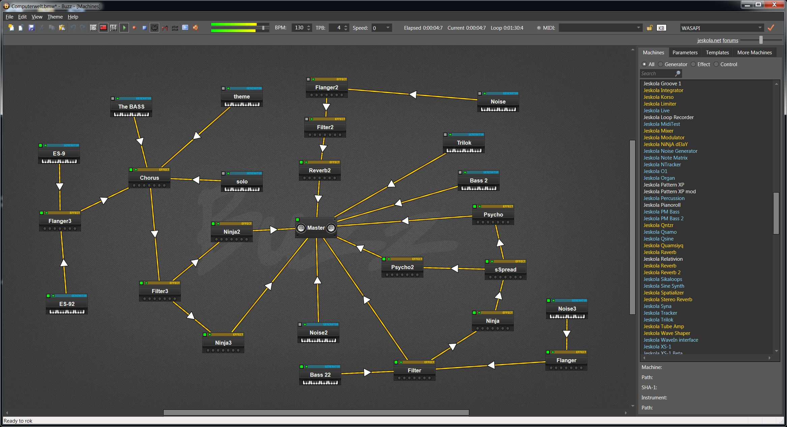
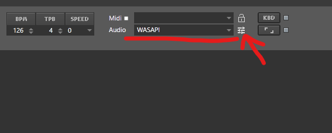
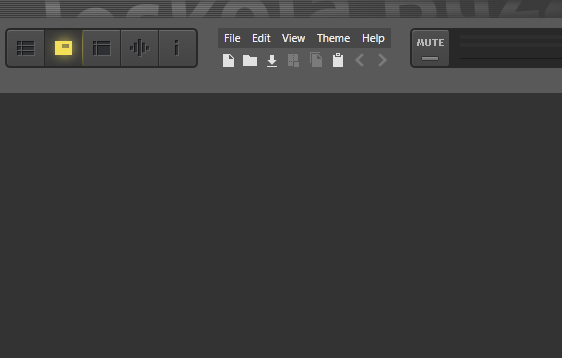
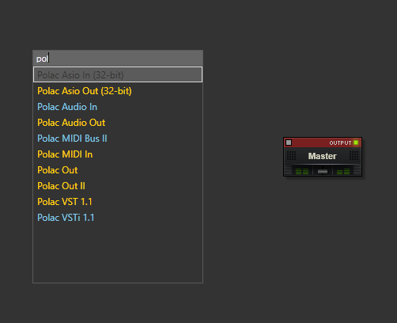
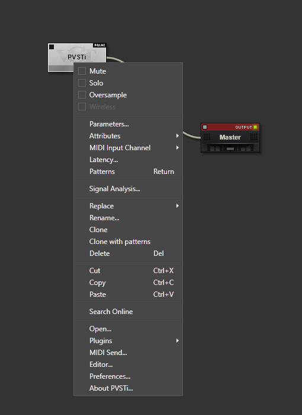
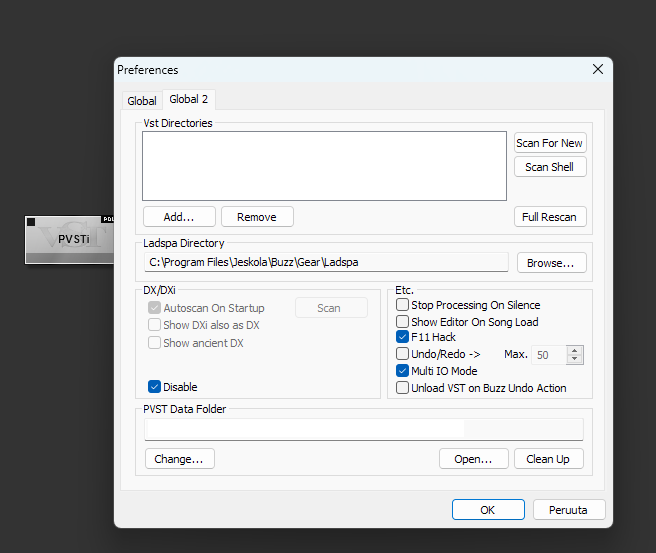
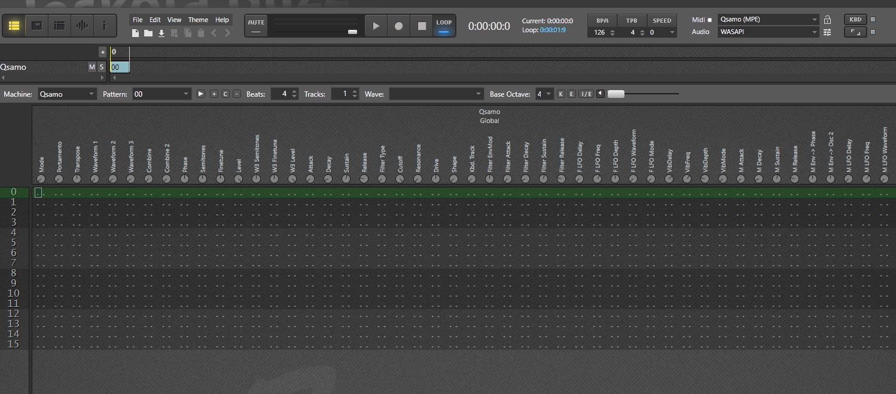
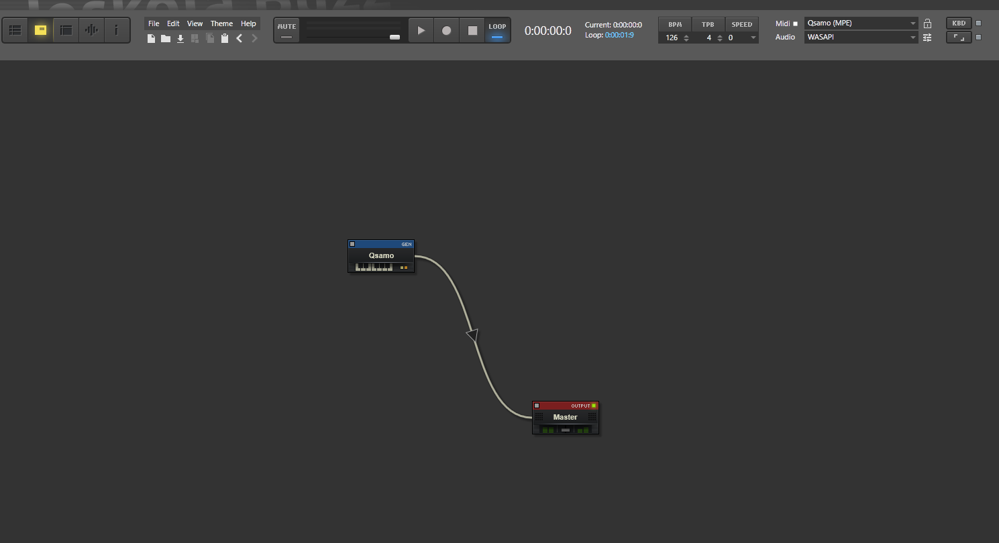
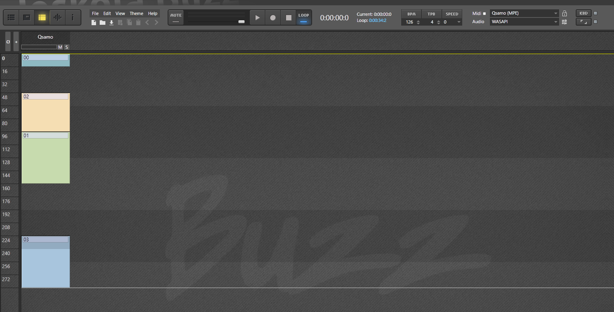

Are you ready to rok?

And click the icon on the right side for audio driver settings
Now lets add all your awesome plugins to ReBuzz
Go to Machine View and add machine Polac VSTi 1.1...

...and the fastest way to do that is to start typing the name pol...

...and the fastest way to do that is to start typing the name pol...
Then select Polac VSTi 1.1
Right click PVSTi and choose Preferences...

Go to Global 2 tab add all plugin folders you want to be included.

Go to Global 2 tab add all plugin folders you want to be included.
From Global tab, set MIDI In Mode to "All"
Go to Global 2 tab add all plugin folders you want to be included.
Press Ok and restart ReBuzz. Now you have all your cool plugins available.
Go to Global 2 tab add all plugin folders you want to be included.
Press Ok and restart ReBuzz. Now you have all your cool plugins available.
Note that it might take a while to scan all VST plugins.
You spend most of your time in Pattern Editor, Machine Editor and Sequence Editor
Pattern Editor (F2): you edit or compose patterns

Machine Editor (F3): add generators, effects and controllers

Sequence Editor (F4): Arrange patterns

Check Help, Settings and The Web to learn more
Check Help, Settings and The Web to learn more
...and Machines, Wiki, BuzzTunes.org and Forum
Check Help, Settings and The Web to learn more
...and Machines, Wiki, BuzzTunes.org and Forum
Now you are ready to compose your next big hit!